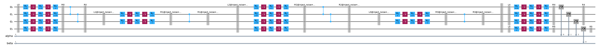

Samplex Inputs and Outputs¶
Introduction¶
Samplex is the core type of the samplomatic library.
A samplex represents a parametric probability distribution over the
parameters of some template circuit, as well as other array-valued fields to use in
post-processing data collected from executing the bound template circuit. Its central interface
is the sample() method that draws from this distribution to produce a
collection of arrays.
This guide is about using the sample() interface, how to query and specify required inputs, and how to inspect expected outputs.
The arrays supplied to and returned from sample() are strongly typed, in the
sense that for any particular instance of a samplex, their names, types, and shapes are fixed and queryable before any sampling is performed.
The various inputs and outputs present in a samplex depend on many factors, for example, whether measurement twirling is present or whether noise
injection is required.
For this reason, we can’t generally expect two samplex instances to have the same inputs and outputs as each other.
Setup¶
To begin, we construct a boxed-up circuit and build it into a samplex and template pair to use in the examples that follow.
Note that while manually boxing up the circuit, we use the names alpha, beta, ref1, ref2, mod_ref1, mod_ref2, mod_ref3, and conclude, and moreover the circuit has four Parameters.
This guide shows how each of these play a role in the samplex inputs and outputs.
See the transpiler guide for information about boxing up circuits automatically.
import matplotlib.pyplot as plt
import numpy as np
from qiskit.circuit import ClassicalRegister, Parameter, QuantumCircuit, QuantumRegister
from qiskit.quantum_info import Operator, Pauli, PauliLindbladMap
from samplomatic import ChangeBasis, InjectNoise, Twirl, build
# our circuit has two classical registers named alpha and beta
circuit = QuantumCircuit(
QuantumRegister(4), alpha := ClassicalRegister(3, "alpha"), beta := ClassicalRegister(1, "beta")
)
# the first box is only twirled
with circuit.box([Twirl()]):
for idx in range(4):
circuit.rx(Parameter(f"a{idx}"), idx)
circuit.cz(0, 1)
circuit.cz(1, 2)
# the second box is twirled, and has noise injected
with circuit.box([Twirl(), InjectNoise(ref="ref1", modifier_ref="mod_ref1")]):
circuit.h(1)
circuit.cz(1, 2)
# the third box is twirled, and has different noise injected
with circuit.box([Twirl(), InjectNoise(ref="ref2", modifier_ref="mod_ref2")]):
circuit.rx(0.1, range(4))
circuit.cz(0, 1)
circuit.cz(1, 2)
# the fourth box is the same as the second, but with a different modifer ref
with circuit.box([Twirl(), InjectNoise(ref="ref1", modifier_ref="mod_ref3")]):
circuit.h(1)
circuit.cz(1, 2)
circuit.barrier()
# the final two boxes twirl, and add a basis change in one case
with circuit.box([Twirl(), ChangeBasis(ref="conclude")]):
circuit.measure(range(3), alpha)
with circuit.box([Twirl()]):
circuit.measure([3], beta)
circuit.draw("mpl")

Next, we call build() on the boxed-up circuit to construct a template and samplex pair, and we see how each of the boxes is turned into a barrier-sandwich including rz-sx-rz-sx-rz fragments to implement dressing.
template, samplex = build(circuit)
template.draw("mpl", fold=100)

Plotting the samplex DAG and hovering over the nodes we see that
All of the sampling nodes (stars) are responsible for generating randomizations for twirling, sampling from noise models, or injecting basis changes.
All of the collection nodes (bow ties) are responsible for rendering slices of outputs, which are either measurement flips or parameter angles.
All of the intermediate nodes (circles) are responsible for various kinds of data manipulation.
samplex.draw()
Querying the required inputs and expected outputs¶
The easiest way to see the required inputs and expected outputs is to print the Samplex object. Array items are formatted as '{name}' <{type}[{shape}...]>, and the required inputs precede the optional inputs.
print(samplex)
Samplex(<58 nodes>)
Inputs:
- 'basis_changes.conclude' <uint8[3]>: Basis changing gates, in the symplectic ordering
I=0, Z=1, X=2, and Y=3.
- 'parameter_values' <float64[4]>: Input parameter values to use during sampling.
- 'pauli_lindblad_maps.ref1' <PauliLindbladMap>: A PauliLindblad map acting on 2 qubits,
with 'num_terms_ref1' terms.
- 'pauli_lindblad_maps.ref2' <PauliLindbladMap>: A PauliLindblad map acting on 4 qubits,
with 'num_terms_ref2' terms.
- 'local_scales.mod_ref1' <float64['num_terms_ref1']>: (Optional) An array of factors by
which to scale individual rates of a Pauli Lindblad map, where the order should match the
corresponding list of terms.
- 'local_scales.mod_ref2' <float64['num_terms_ref2']>: (Optional) An array of factors by
which to scale individual rates of a Pauli Lindblad map, where the order should match the
corresponding list of terms.
- 'local_scales.mod_ref3' <float64['num_terms_ref1']>: (Optional) An array of factors by
which to scale individual rates of a Pauli Lindblad map, where the order should match the
corresponding list of terms.
- 'noise_scales.mod_ref1' <float64[]>: (Optional) A scalar factor by which to scale rates
of a Pauli Lindblad map.
- 'noise_scales.mod_ref2' <float64[]>: (Optional) A scalar factor by which to scale rates
of a Pauli Lindblad map.
- 'noise_scales.mod_ref3' <float64[]>: (Optional) A scalar factor by which to scale rates
of a Pauli Lindblad map.
Outputs:
* 'measurement_flips.alpha' <bool['num_randomizations', 1, 3]>: Bit-flip corrections
for measurement twirling.
* 'measurement_flips.beta' <bool['num_randomizations', 1, 1]>: Bit-flip corrections for
measurement twirling.
* 'parameter_values' <float32['num_randomizations', 48]>: Parameter values valid for an
associated template circuit.
* 'pauli_signs' <bool['num_randomizations', 3]>: Signs from sampled Pauli Lindblad
maps, where boolean values represent the parity of the number of non-trivial factors in the
sampled error that arise from negative rates. In other words, in order to implement basic
PEC, the sign used to correct expectation values should be ``(-1)**bool_value``. The order
matches the iteration order of boxes in the original circuit with noise injection
annotations.
The inputs() and outputs() of the samplex, as well as more detailed information like their names, shapes, types, and descriptions, can also be queried programatically. The return type of both of these methods is a TensorInterface. For example, we list here all specifications of the input interface:
samplex.inputs().specs
[TensorSpecification('basis_changes.conclude', (3,), dtype('uint8'), 'Basis changing gates, in the symplectic ordering I=0, Z=1, X=2, and Y=3.'),
TensorSpecification('local_scales.mod_ref1', ('num_terms_ref1',), dtype('float64'), 'An array of factors by which to scale individual rates of a Pauli Lindblad map, where the order should match the corresponding list of terms.', optional=True),
TensorSpecification('local_scales.mod_ref2', ('num_terms_ref2',), dtype('float64'), 'An array of factors by which to scale individual rates of a Pauli Lindblad map, where the order should match the corresponding list of terms.', optional=True),
TensorSpecification('local_scales.mod_ref3', ('num_terms_ref1',), dtype('float64'), 'An array of factors by which to scale individual rates of a Pauli Lindblad map, where the order should match the corresponding list of terms.', optional=True),
TensorSpecification('noise_scales.mod_ref1', (), dtype('float64'), 'A scalar factor by which to scale rates of a Pauli Lindblad map.', optional=True),
TensorSpecification('noise_scales.mod_ref2', (), dtype('float64'), 'A scalar factor by which to scale rates of a Pauli Lindblad map.', optional=True),
TensorSpecification('noise_scales.mod_ref3', (), dtype('float64'), 'A scalar factor by which to scale rates of a Pauli Lindblad map.', optional=True),
TensorSpecification('parameter_values', (4,), dtype('float64'), 'Input parameter values to use during sampling.'),
PauliLindbladMapSpecification('pauli_lindblad_maps.ref1', num_qubits=2, num_terms=num_terms_ref1),
PauliLindbladMapSpecification('pauli_lindblad_maps.ref2', num_qubits=4, num_terms=num_terms_ref2)]
Next, as an example, we choose to print some information about those output specifiers whose names contain the string "flips".
for spec in samplex.outputs().get_specs("flips"):
print(spec.name, spec.shape, spec.dtype)
measurement_flips.alpha ('num_randomizations', 1, 3) bool
measurement_flips.beta ('num_randomizations', 1, 1) bool
Binding input values and sampling¶
In order to sample(), the samplex needs to be provided with values for at least those inputs() that are marked as required.
These values are first bound to an input interface so that it can perform all necessary type checking (or type coercion in some cases) and shape analysis.
If anything is wrong with the types or shapes, or if a required value is missing, a verbose error is raised.
Binding input¶
In the following example, we pass the sample() method its bare minimum requirements, and use it to draw 3 randomizations from the samplex.
The required bindings arising from the dressings are the Pauli Lindblad maps for noise injection and the basis change array. In addition to these, values for the four parameters in the original boxed-up circuit are required, which in this case we set to np.linspace(0, 1, 4). The samplex will compose these parameters into the dressings, so that they effectively end up as modifications to the output parameter values of the samplex.
inputs = samplex.inputs().bind(
# bind() concatenates nested dicts with a '.' so that we can
# set 'pauli_lindblad_maps.noise0/1' as follows. note that the
# names 'ref1' and 'ref2' derive from the names in the InjectNoise
# annotation.
pauli_lindblad_maps={
"ref1": PauliLindbladMap.identity(2),
"ref2": PauliLindbladMap.identity(4),
},
# likewise, we can set all basis changes as follows, where
# the name 'conclude' comes from our basis change annotation
basis_changes={"conclude": [0, 1, 2]},
# we must provide values for all parameters in the original circuit
parameter_values=np.linspace(0, 1, 4),
)
outputs = samplex.sample(inputs, num_randomizations=3)
print(outputs)
SamplexOutput(<
- Dimension constraints: num_randomizations=3
* 'measurement_flips.alpha' <bool['num_randomizations', 1, 3]>: Bit-flip corrections for
measurement twirling.
* 'measurement_flips.beta' <bool['num_randomizations', 1, 1]>: Bit-flip corrections for
measurement twirling.
* 'parameter_values' <float32['num_randomizations', 48]>: Parameter values valid for an
associated template circuit.
* 'pauli_signs' <bool['num_randomizations', 3]>: Signs from sampled Pauli Lindblad maps,
where boolean values represent the parity of the number of non-trivial factors in the sampled
error that arise from negative rates. In other words, in order to implement basic PEC, the
sign used to correct expectation values should be ``(-1)**bool_value``. The order matches the
iteration order of boxes in the original circuit with noise injection annotations.
>)
Inputs can be bound to the interface through multiple calls to bind() or by direct item assignment.
Despite the nested dictionary format that bind() allows for convenience, it is a flat mapping object, and supports all of the usual mapping syntax.
Once all required inputs have been found, fully_bound becomes true.
inputs = (
samplex.inputs()
.bind(
pauli_lindblad_maps={
"ref1": PauliLindbladMap.identity(2),
"ref2": PauliLindbladMap.identity(4),
}
)
.bind(parameter_values=np.linspace(0, 1, 4))
)
# once the final requirement is bound, fully_bound becomes True
print("Fully bound?", inputs.fully_bound)
inputs["basis_changes.conclude"] = [0, 2, 3]
print("Fully bound?", inputs.fully_bound)
# setting optional values does not affect whether the interface is fully bound
inputs["noise_scales.mod_ref1"] = 3
print("Fully bound?", inputs.fully_bound)
Fully bound? False
Fully bound? True
Fully bound? True
All TensorInterface objects, including the SamplexOutput subclass, are mapping objects against data that has been bound to them.
This means that we can get, for example, the template parameter values as follows, which in this case has shape (3, 48) since we asked for 3 randomizations and the template circuit has 48 parameters.
print("(num_randomizations, num_template_params) =", outputs["parameter_values"].shape)
print(outputs["parameter_values"][0, :])
(num_randomizations, num_template_params) = (3, 48)
[ 4.4408921e-16 3.1415927e+00 0.0000000e+00 -1.5707964e+00
2.8082592e+00 -1.5707964e+00 -1.5707964e+00 2.4749260e+00
-1.5707964e+00 -1.5707964e+00 2.1415927e+00 1.5707964e+00
3.1415927e+00 1.5707964e+00 0.0000000e+00 4.4408921e-16
3.1415927e+00 0.0000000e+00 -1.5707964e+00 1.0000000e-01
1.5707964e+00 -1.5707964e+00 3.0415926e+00 1.5707964e+00
1.5707964e+00 1.0000000e-01 1.5707964e+00 -1.5707964e+00
1.0000000e-01 1.5707964e+00 3.1415927e+00 1.5707964e+00
0.0000000e+00 3.1415927e+00 0.0000000e+00 0.0000000e+00
3.1415927e+00 3.1415927e+00 0.0000000e+00 4.4408921e-16
3.1415927e+00 0.0000000e+00 3.1415927e+00 1.5707964e+00
3.1415927e+00 3.1415927e+00 3.1415927e+00 0.0000000e+00]
Specifying input as a dictionary¶
Instead of providing a fully-bound TensorInterface, we can specify the inputs as a standard dictionary, as is shown in the cell below. In this case, the sample() method internally binds the items of the dictionary to the samplex’ input interface to validate all required inputs are present and compatible.
inputs = {
"pauli_lindblad_maps": {
"ref1": PauliLindbladMap.identity(2),
"ref2": PauliLindbladMap.identity(4),
},
"basis_changes": {"conclude": [0, 1, 2]},
"parameter_values": np.linspace(0, 1, 4),
}
outputs = samplex.sample(inputs, num_randomizations=3)
Input types¶
Presently, there are two distinct interface value types, though this may grow:
Array-valued: These have a shape and a data type. Bound values are coerced into the data type if possible. Any dimension can be a free dimension.
Pauli Lindblad maps: These must be of type
qiskit.quantum_info.PauliLindbladMapand must act on the prescribed number of qubits. The number of terms in the map is a free dimension.
# up to precision loss, these are equivalent via automatic type coersion of array inputs
samplex.inputs()["parameter_values"] = [1, 2, 8, 9]
samplex.inputs()["parameter_values"] = np.array([1, 2, 8, 9], dtype=np.float16)
Free dimensions¶
The TensorInterface class has a notion of free dimensions, which are named integer sizes whose values are undetermined until some data has been bound to the interface that constrains them.
All free dimensions of the same name must resolve to a consistent size when binding data or an error will be raised.
For example, in the outputs() of any samplex, the array axis corresponding to randomizations is a free parameter that has the name "num_randomizations" by convention.
When sample() is called, it binds values to the outputs
print("All free dimensions:", outputs.free_dimensions)
print("Current constraints:", outputs.bound_dimensions)
All free dimensions: {'num_randomizations'}
Current constraints: {'num_randomizations': 3}
Another common free-dimension scenario is the sharing of term constraints between Pauli lindblad map specifications and their modifiers.
A qiskit.quantum_info.PauliLindbladMap is an ordered sequence of terms, where each term contains a floating point rate and a sparse Pauli representation.
The build() function adds a specifier "pauli_lindblad_maps.<ref>" for this type for each InjectNoise annotation, and if it contains a modifier_ref,
then a "local_scales.<modifier_ref>" specifier is also added.
Both of these share the free dimension called "num_terms_<ref>" that specifies how many Pauli Lindblad terms are present in the noise model, for the latter needs to zip against the rates of the former in order to scale them.
# both the PauliLindbladMap and the local scales imply 2 terms, so that the free dimension
# 'num_terms_noise2' is satisfied
inputs = samplex.inputs().bind(
pauli_lindblad_maps={"ref2": PauliLindbladMap.from_list([("XXYZ", 0.1), ("IIXX", 0.2)])},
local_scales={"mod_ref2": [1, 2]},
)
print("All free dimensions:", inputs.free_dimensions)
print("Current constraints:", inputs.bound_dimensions)
All free dimensions: {'num_terms_ref2', 'num_terms_ref1'}
Current constraints: {'num_terms_ref2': 2}
Qubit ordering convention¶
Samplexes constructed from boxed-up circuits by the build() function can require array-valued inputs to sample() where one index corresponds to qubits of some box of the circuit.
This section explains the ordering convention that should be used for such axes.
In short: use the qubit order of the boxed-up circuit, restricted to the qubits of the box.
As an example, suppose we are trying to figure out how to specify a Pauli Lindblad map for "noise1".
Then the order of qubits in the noise map is with respect to these qubits:
box_of_interest = circuit[1]
qubit_ordering_convention = [qubit for qubit in circuit.qubits if qubit in box_of_interest.qubits]
qubit_ordering_convention
[<Qubit register=(4, "q0"), index=1>, <Qubit register=(4, "q0"), index=2>]
That is, if we want <Qubit register=(4, "q0"), index=2> to be noisy with X noise, then we should define a Pauli Lindblad map like this one because it is at index 1 of qubit_ordering_convention.
samplex.inputs().bind(
pauli_lindblad_maps={
"ref1": (noise1 := PauliLindbladMap.from_sparse_list([("X", [1], 0.12)], num_qubits=2))
}
)
noise1
<PauliLindbladMap with 1 term on 2 qubits: (0.12)L(X_1)>
The same holds true for basis changes. If we want to rotate into the +1 eigenstates of the operators X, Y, and Z for qubits 0, 1, and 2 of circuit respectively, then we should do so with the following array, recalling the symplectic convention \(I=0\), \(Z=1\), \(X=2\), and \(Y=3\) is used in this library, as well as qiskit.
samplex.inputs().bind(basis_changes={"conclude": (basis_change := [2, 3, 1])})
basis_change
[2, 3, 1]
Note that the qubit ordering convention is not the order defined by:
box_instruction.qubits, wherebox_instructionis aqiskit.circuit.CircuitInstructionwhose operation is aqiskit.circuit.BoxOp, because the order of this list of qubits may depend on the order in which instructions were added to the box context, which would be a confusing convention. For example,with box(): circuit.x([0, 1])andwith box(): circuit.x([1, 0])would result in different orderings.box_instruction.operation.body.qubitsbecause these qubits might not even appear in the outer circuit; qubits inside of the actual body ofBoxOpinstructions (or any other control flow operation likeIfElseOp) are only promised to have a consisent meaning within that scope. This would be an ill-defined convention, and hard to use in general.
Local testing with the template circuit¶
If a Samplex is constructed via the build() function, then the parameter values that it outputs should be directly compatible with the parameters of the associated template circuit.
For example, we can bind values for one of the randomizations to the template for local inspection.
inputs = samplex.inputs().bind(
pauli_lindblad_maps={
"ref1": PauliLindbladMap.identity(2),
"ref2": PauliLindbladMap.identity(4),
},
basis_changes={"conclude": [0, 0, 0]},
parameter_values=np.linspace(0, 1, 4),
)
outputs = samplex.sample(inputs, num_randomizations=3)
bound_template = template.assign_parameters(outputs["parameter_values"][2])
bound_template.draw("mpl", fold=1000)

This enables a means to inspect that the samplex is outputing samples that are expected.
For example, below, we cast the bound circuit to a qiskit.quantum_info.Operator object and compose with the bitflip Paulis to visually inspect that all three randomizations are logically equivalent to the base circuit.
from samplomatic.utils import unbox
# Operator requires that we unpack all of the boxes first
unboxed = unbox(circuit).assign_parameters(inputs["parameter_values"])
# We want to plot unitary matrix amplitudes, so we need to remove the non-unitary measurements
unboxed.remove_final_measurements()
unboxed_unitary = Operator(unboxed)
# Plot magnitudes of the unitary matrix represenation of the circuit
plt.subplot(1, 4, 1)
plt.imshow(np.abs(unboxed_unitary))
plt.title("Base Circuit")
# For each randomization we sampled, plot the unitary matrix representation
for idx in range(3):
bound_template = template.assign_parameters(outputs["parameter_values"][idx])
bound_template.remove_final_measurements()
# Our example does measurement twirling by compiling random bitflip gates before the
# measurements, so we need to undo these at the operator level for each randomization.
# We do this by casting them to Paulis and composing with the bound circuit's unitary
alpha_flips = Pauli(([0, 0, 0], outputs["measurement_flips.alpha"][idx, 0]))
beta_flips = Pauli(([0], outputs["measurement_flips.beta"][idx, 0]))
flips = beta_flips ^ alpha_flips
bound_unitary = Operator(bound_template) & flips
# Plot magnitudes of the unitary matrix represenation of the circuit
plt.subplot(1, 4, idx + 2)
plt.imshow(np.abs(bound_unitary))
plt.title(f"Randomization {idx}")
plt.tight_layout()

Along the same lines, here, we pass output parameter values and the template to a sampler to simulate 10,000 shots of all randomizations, and compare the resulting expectation values (only of the alpha register) to the expectation values of a simulation of the base circuit alone.
from qiskit.primitives import StatevectorEstimator as Estimator
from qiskit.primitives import StatevectorSampler as Sampler
from qiskit.primitives.containers import BitArray
# simulate some expectation values direction from the base circuit
estimator_job = Estimator().run([(unboxed, ["IZII", "IIZI", "IIIZ"])])
evs = estimator_job.result()[0].data["evs"]
# get the sampler data from each randomization, and do bitflip correction
sampler_job = Sampler().run([(template, outputs["parameter_values"])], shots=10_000)
alpha_data = sampler_job.result()[0].data["alpha"]
alpha_data ^= BitArray.from_bool_array(outputs["measurement_flips.alpha"], "little")
# compare the results
print(" EVs from base circuit:", evs)
print("EVs from randomizations:", alpha_data.expectation_values(["ZII", "IZI", "IIZ"]))
EVs from base circuit: [0.7819611 0.93553883 0.99500417]
EVs from randomizations: [0.7774 0.9296 0.9936]